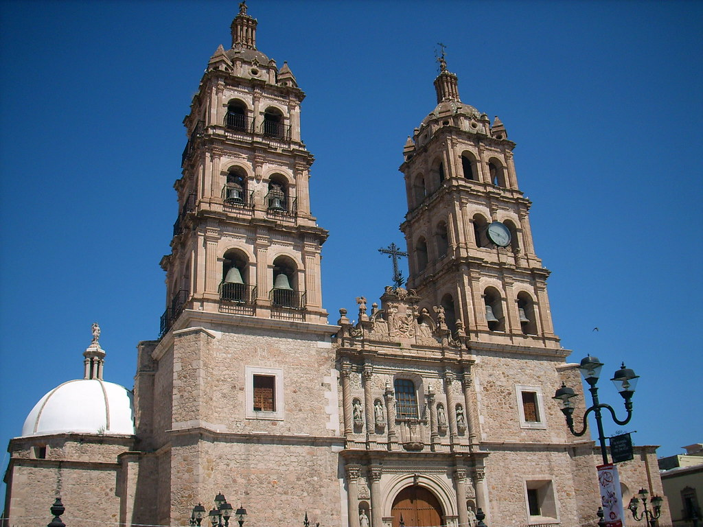

Durango,Mexico
|
Durango, Mexico, traces its history through a tapestry of rich cultural influences. Once inhabited by indigenous tribes like the Tepehuanos and Zacatecos, it became a vital mining hub during the Spanish colonial era. Recognized for its silver deposits, Durango prospered and evolved as a significant center for trade and commerce. Over time, it embraced diverse influences, from its colonial legacy to its role in Mexico's struggle for independence, shaping the vibrant tapestry of its historical narrative. |
Durango, Mexico, witnessed a significant gold rush during the late 19th century, drawing prospectors and adventurers seeking fortunes. The discovery of gold deposits, particularly in the mountains and riverbeds of the region, sparked a frenzy of mining activity. This rush brought a surge of immigrants and entrepreneurs, shaping Durango's landscape and economy. The pursuit of gold led to the establishment of mining towns and infrastructure, leaving an indelible mark on the history and development of the region. Though the intensity of the gold rush eventually waned, its legacy remains embedded in the annals of Durango's history. |
The Durango Cathedral, officially named Catedral Basílica Menor de la Inmaculada Concepción, stands as an architectural gem in Durango, Mexico. Built in the 18th century, its grand neoclassical façade and ornate interior, adorned with intricate altars and stained glass, reflect the city's rich colonial heritage. As a revered religious and cultural landmark, it continues to captivate visitors, offering a glimpse into Durango's historical and spiritual legacy. |